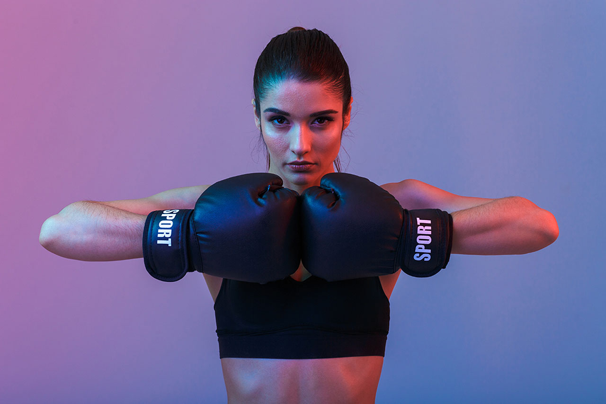

Welcome on board!
The Certificate IV in Personal Training
Welcome on board The Certificate IV in Personal Training. We're ecstatic you've chosen to study through UP Education. Continue reading the Course Overview below to learn a little more about what's in store.

Module outline
| Block | Module | Description |
|---|---|---|
| Introduction to Personal Training |
Module 1:
Module 2: |
Develop your knowledge of human anatomy, components of fitness and appropriate training methods. |
| Health and safety |
Module 3:
Module 4:
Module 5: |
Learn the correct techniques to ensure you and your clients are safe. Developing and maintaining a healthy lifestyle. |
| Programming |
Module 6: |
How to prepare and create programs to meet clients needs and help them achieve their goals. |
| Business |
Module 7: |
Learn how to create a successful business plan and find out how to make the most from your marketing strategy. |
| Special Populations |
Module 8: |
Discover ways to support common health conditions, how to modify your program and motivate your clients. |
Accordion component
Dagobah was a planet in the Dagobah system, and one of the purest places in the galaxy within the Force. A remote world of swamps and forests, it served as a refuge for Jedi Grand Master Yoda during his exile after the destruction of the Jedi Order.
Hoth was the arena of a battle between the Galactic Empire and the Rebel Alliance, which had installed its temporary headquarters, Echo Base, on the ice planet.
Endor, designated IX3244-A, also known as the Forest Moon of Endor or the Sanctuary Moon, was a small forested moon that orbited the Outer Rim planet of the same name and was the homeworld of the sentient Dulok, Ewok, and Yuzzum species, as well as the semi-sentient Gorax and Wistie races.